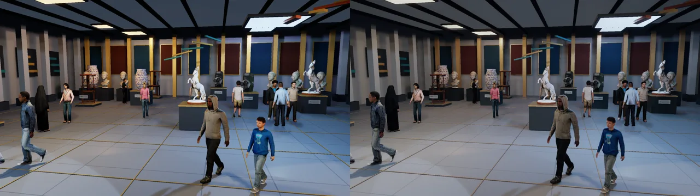

Living DLSS5 Gallery
Sixteen people include a guide, a guard, families and seated visitors, with phones and photography. Two animated animal exhibits complete the collection. Real facial blend shapes and four native mesh levels. All images come from hidden D3D12 readbacks.
Cost of detail at 1080p
720 measured frames, three counterbalanced repeats, no presentation or capture during timing. Wall time includes CPU/driver work and the GPU fence. These are offscreen costs; the interactive split view renders both halves.
Activities

Expressions

The supplied blink, smile and jaw shapes have procedural timing. There is no dialogue or lip synchronization.
In motion
Same light render: native input on the left, DLSS5 output on the right. Two seconds at 24 fps, looping.

Verification · Measurements · Asset installer check · All sixteen people